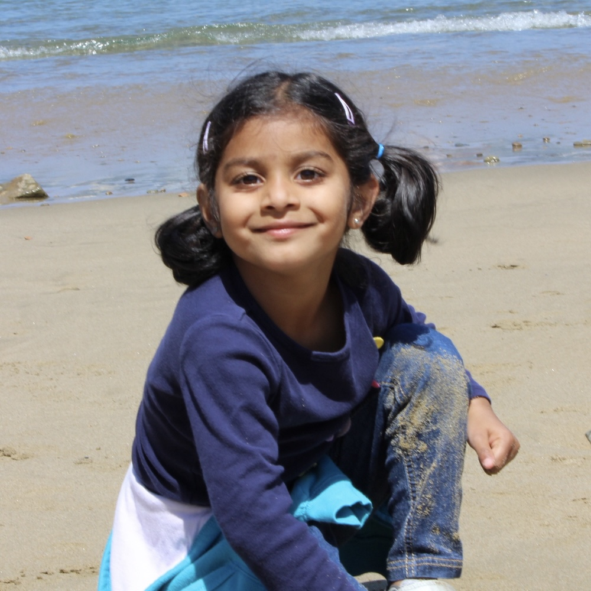
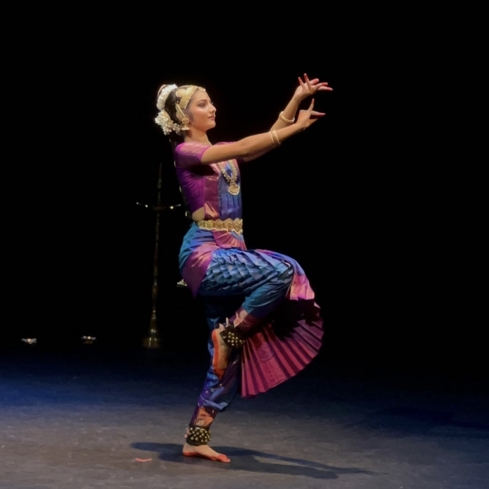

Esha Anand
yay!
Introduction
I was born in Memphis, Tennessee in 2010, but I moved to San Diego at around 4 months. I've lived in San Diego since then. I'm an only child, and I live with my parents and my grandparents in Carmel Valley, where I've been since kindergarten. I'm a sophomore at CCA; right now, I am taking spanish, AP CSP, honors chem, and AP Calc AB. My favorite subjects are comp sci, engineering, and math, but recently I've been really enjoying chemistry. I plan to study electrical engineering or physics in university.
Family
 My parents immigrated to the U.S. from India in the mid-2000s for grad school at the University of Houston. My mom was pursuing a PhD in medical microbiology, and my dad was doing one in pharmaceutical sciences. Most people in my mom's family have studied life sciences, but my grandfather originally wanted to be a mechanical engineer. His family couldn't send him to engineering school, so he studied physics, but he learned automotive engineering through books and used to repair his neighbors' vehicles for free when they broke. He won an award from the Indian government for saving them lots of money by repairing an expensive machine, and he was the person who first got me interested in engineering.
My parents immigrated to the U.S. from India in the mid-2000s for grad school at the University of Houston. My mom was pursuing a PhD in medical microbiology, and my dad was doing one in pharmaceutical sciences. Most people in my mom's family have studied life sciences, but my grandfather originally wanted to be a mechanical engineer. His family couldn't send him to engineering school, so he studied physics, but he learned automotive engineering through books and used to repair his neighbors' vehicles for free when they broke. He won an award from the Indian government for saving them lots of money by repairing an expensive machine, and he was the person who first got me interested in engineering.
Interests
My favorite thing to do is dance. I've been dancing since the age of 2 and I've done ballet, hiphop, contemporary, and Indian classical dance (bharatanatyam). I'm also on CCA's FRC robotics team, 3128: The Aluminum Narwhals! I'm part of the mechanical department where I help with manufacturing and assembly. Another thing I love to do is read. My favorite genres are fantasy and historical fiction, and my favorite books are Babel by R.F. Kuang and If We Were Villains by M.L. Rio. I'm currently reading Cleopatra and Frankenstein by Coco Mellors, and I recently finished reading The God of the Woods by Liz Moore.